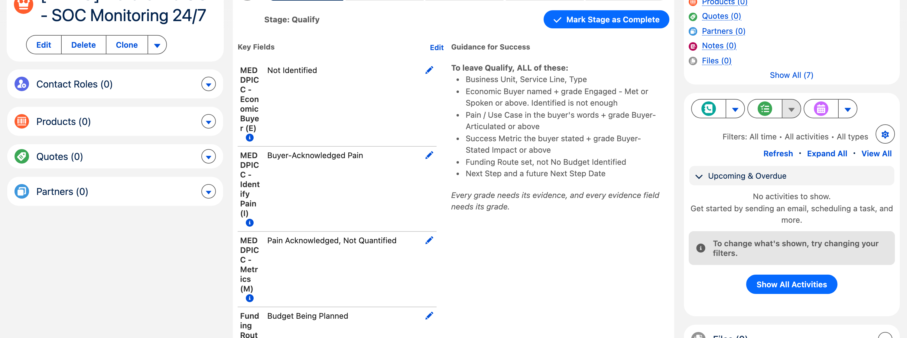

Six stages: Qualify → Solution Validation → Proposal / Bid Submitted → Negotiation / Commercial Agreement → Closed Won, or Closed Lost from anywhere. The Sales Path shows the required fields for whichever stage you are on and repeats the exit criteria — use it, it is faster than this page.

Applies to every single stage move
Every stage change needs a Next Step and a Next Step Date of today or later. If your next-step date has slipped into the past you cannot advance the deal at all until you update it. This catches people more than any other rule, and it is deliberate: a deal with no credible next step is not really moving. It does not apply when you move to Closed Won or Closed Lost.
What it looks like when a gate stops you

1 · Leaving Qualify
You need all of the following. The pattern that runs through the whole model: it is not enough to have written something down — the buyer has to have told you. A rep-assumed grade will not pass.
| What | The bar it has to clear |
|---|---|
| Business Unit, Service Line, Type | Just set them. Type is New Business, Cross-Sell, Expansion or Renewal |
| Economic Buyer | Named, and graded Engaged - Met or Spoken or Funding Authority Confirmed. “Identified by Name & Role” is not enough |
| Pain / Use Case | Filled, and graded Buyer-Articulated in Own Words or Pain Tied to Business Consequence |
| Success Metric | Filled, and graded Buyer-Stated Impact or Buyer-Quantified & Documented |
| Funding Route | Set, and not No Budget Identified |
2 · Leaving Solution Validation — the longest gate
| What | The bar it has to clear |
|---|---|
| Procurement Route | Direct Award, Framework Call-off, Open Tender or Mini-Competition |
| Framework Name | Required if the route is Framework Call-off or Mini-Competition |
| Champion + Champion Confirmed Date | Graded Champion Confirmed Advocacy or better |
| Decision Criteria | Graded Buyer-Stated, Informal or better |
| Decision Process | Graded Steps & Timeline Buyer-Confirmed or better |
| Competition | Graded Buyer-Confirmed Competitive Set or better |
Two sensible exemptions
- On an
Open TenderorMini-Competition,Competitors Identifiedis accepted — in a blind tender you genuinely cannot confirm the competitive set with the buyer. - If Type = Expansion this gate is light-touch: you need only Economic Buyer and Champion set, because an expansion reuses buyer contacts you already have.
3 · Leaving Proposal / Bid Submitted
Before you can even enter this stage
Unless it is a renewal: Bid Decision must be Bid or Bid - Conditional,
plus Bid Decision Date and Bid Decision By. Pending Review and
No Bid will block you. Bidding on everything is how margin disappears.
To leave, you need Proposal / Bid Reference; Submission Date — when you actually submitted, not the portal deadline; Buyer Receipt Confirmed, ticked and in writing; Evaluation Date; and MEDDPICC Complete — all eight elements at grade.
Worth knowing
Paper Process Status is one of the eight MEDDPICC elements, so your commercial paper has to be moving before you can leave Proposal. That is intentional, and it surprises people.
4 · Leaving Negotiation / Commercial Agreement
- Verbal Commit Date
- Verbal Commit Evidence — written or minuted intent to award
- Paper Process Status — past
Not Started - Legal Review Status — past
Not Started.Not Requiredis a legitimate answer on existing terms
5 · Closed Won
Contract / PO Number · Signed Date · Contract Start Date · Contract End Date · Win Reason.
Two things that bite here
Contract End Date drives the automatic renewal. Get it right.
Add your products before you close. A won deal with no line items becomes a finance exception, and finance has to come back to you for it.
6 · Closed Lost
Loss Reason · Loss Detail · plus Competitor Won if you lost to a competitor, and Winning Supplier — Other if that competitor is “Other”.
One-way door
A Closed Lost deal cannot be reopened. If it comes back, use the Create Re-Tender button — it creates a linked new opportunity and preserves the loss history a future win/loss review depends on.